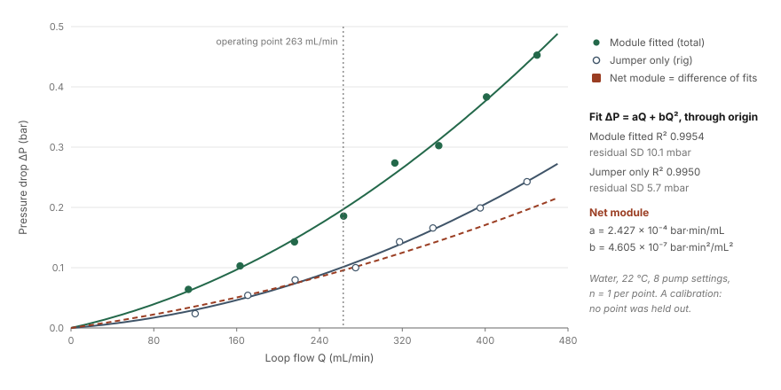
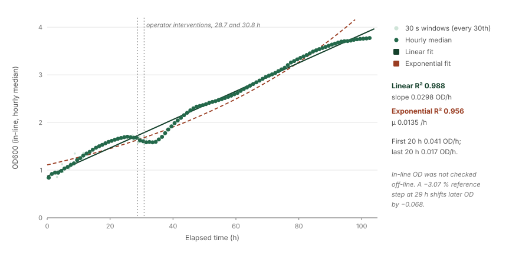
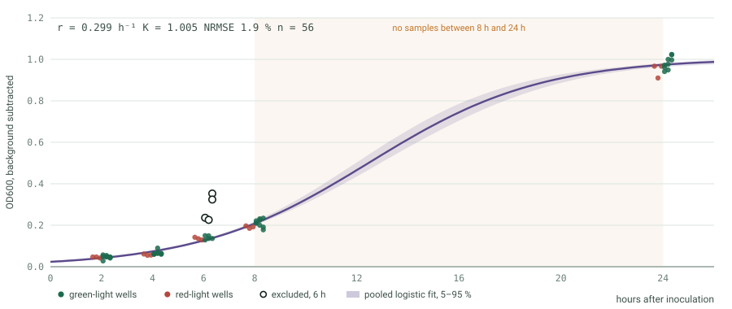
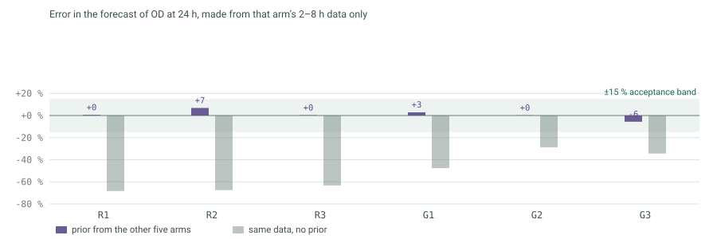

Introduction
What is a digital twin?
There is not always a clear boundary between a digital model, a digital shadow and a digital twin.
A digital model represents a physical system but is updated manually. A digital shadow automatically receives real-time data from the physical system, but any changes back to the system still require human input. A digital twin closes the loop: information can flow automatically from the physical system to the model and back again, allowing the model to directly influence how the system operates. Because these terms are often used interchangeably, a simulation, a live sensor dashboard and an automatic controller may all be described as a digital twin. The key distinction is how information moves between the physical system and its digital model, and whether that flow happens automatically.
Our bioreactor is meant to run for weeks beside farmland, far from laboratories where results can be analysed precisely. Because no one will always be there to take samples or interpret every reading, the digital twin acts as the decision-making “mind” of the system.
The first challenge of this remote workflow is the lack of manual sampling. In a lab, someone draws culture and checks it by hand. In the field, the reactor's own instruments are the only record of the batch, so they have to be checked continuously. Furthermore, machines wear down, with sensors drifting over days. On the 434-hour run, the OD channel eventually failed. The trust layer of the digital twin flagged the reference beam 26.7 hours before the OD readings became completely unusable.
Additionally, the digital twin makes the decision of whether to switch on the green light to activate protectant production, and more specifically, which protectant to release and produce, in what concentration and amount. Drawing from a system of local-scale sensing and regional-scale data, the digital twin weighs what the field needs against what the reactor can deliver. The regional side is the field weather forecast and the crop-stress risk on the Weather tab, together with the maps from Geospatial Analysis. They show when and where plants are likely to come under stress. The local side is BR-01's own instruments. They report how much biomass is in the loop, whether it is still growing, whether the membrane is still passing permeate, and whether those readings can be trusted at all (R3). Induction makes sense when the field is heading into stress and the culture is in a state to respond. The forecast (R4) and the growth prior (R5) then say whether the batch will be ready in time. Once the ACC deaminase activity assay puts a number on the product, the same framework can estimate how long induction must run to reach a target amount.
What the reactor measures now
Every value is tagged by how it was obtained:
- in-line A sensor on the looped tubing of the culture that is pumped around in the bioreactor.
- commanded Values from the input of the bioreactor operator (farmers).
- soft Values calculated and modelled from in-line readings.
- planned Planned values for data collection.
- external Data the twin pulls in from outside the rig.
Within the bioreactor
| Channel | Instrument | Purpose | Provenance |
|---|---|---|---|
| OD600 | Photometer, amber LED, 2 mm flow cuvette, sample and reference lux sensors | Biomass | in-line |
| pH | Arduino pH probe | Growth and secretion conditions, and an alarm | in-line |
| Pressure × 4 | Four transducers, one on each side of the hollow-fibre module | Lumen ΔP, trans-membrane pressure, fouling | in-line |
| Loop flow | Turbine flow meter | Cross-flow, wall shear, the hydraulic model (R1) | in-line |
| Pinch valves × 2 | Uno Q and motors | Lumen isolation | commanded |
| Luer valves × 4 | Uno Q and motors | Routing between reservoir, module and permeate | commanded |
| Lumen ΔP, TMP, fouling ratio | From pressure and flow through the hydraulic model | Membrane state and the cleaning decision | soft |
| Green light | Characterised on the DiOPAL plate apparatus | Induction of the CcaS/CcaR strain, leading to protectant production | planned |
| Temperature, dissolved oxygen, permeate mass | None fitted | See Must have, yet to have | planned |
Local-scale data
| Channel | Instrument | Purpose | Provenance |
|---|---|---|---|
| Leaf wetness and leaf temperature | RS485 leaf sensor (a capacitive dummy leaf) read over Modbus by an ESP32 | Biotic stress detection and decision-making | planned |
| Air temperature and humidity | SHT31 reference beside the leaf sensor | The 5-day mean temperature in the blast rule, and a check on the forecast temperature | planned |
Leaf wetness on its own is not a stress for rice: the leaf sheds water as beads. It matters because it is the condition a fungus needs to infect. The interface reads the leaf sensor and applies the BLASTAM rule for leaf blast [7]. A wet period counts as an infection condition when the leaf stays wet for at least 10 hours at a mean of 22–25 °C, or 11 hours at 20–21 °C. The requirement rises to 17 hours at 15 °C [8], and there is no infection below 15 °C or above 25 °C. The five days before the wet period must also average 20–25 °C. A dry hour ends the period, and hours of rain at 4 mm/h or more are not counted, because heavy rain washes the spores off. Past hours come from the sensor; hours ahead are estimated from the forecast, as wet when relative humidity reaches 90% [9]. When a period meets the rule, the interface tells the grower to look for lesions five to ten days later.
The sensor is on the bench, not yet in a field. Its wet threshold is a default until the dry-down test sets it, and the rule itself has not been checked against disease records from a Taiwanese field. A met period means the weather allowed infection. Whether lesions appear also depends on spores being present and on the variety and growth stage. ACC deaminase has not been tested against blast, so blast risk is shown to the grower and does not switch the green light unless the operator chooses that.
Regional-scale data
| Channel | Source | Purpose | Provenance |
|---|---|---|---|
| Geospatial analysis | Maps on the Geospatial Analysis page | Where in the region crops are likely to come under stress | external |
| Weather forecast | Open-Meteo, hourly, five days back and three ahead | Temperature, humidity, rain, wind and evapotranspiration at the field | external |
| Crop stress risk | Computed from the forecast on the Weather tab | When protectant is needed | soft |
| Time | The crop calendar | Tracking the period of farming cycles | planned |
The interlocks run on the microcontroller, not in the browser, so no fault in a model or a page can drive the loop past a limit: trans-membrane pressure above 0.50 bar opens the pinch valve, and five seconds with no command from the interface opens it and turns the light off.
Strains on this page
Everything measured before 19 September is B. subtilis 168, the chassis the method was built on. The production strain is WB800, in two versions: constitutive ACCD secretion, and ACCD under CcaS/CcaR green-light control. R5 and the registered forecast are WB800.
Results
- 26.7 hWarning before the OD channel failed (R3)
- 41%Forecast error cut against persistence, 2 h ahead (R4)
- ≤ 7%Plate-to-reactor prior error on held-out arms (R5)
- 1.9%NRMSE of the growth fit, against a 15% criterion (R5)
R1 · Module pressure drop calibrated
16 August 2026, water at 22 °C, eight pump settings, one point each, measured with the module fitted and with a jumper in its place. Both fit \(\Delta P = aQ + bQ^2\) through the origin: module R² 0.9954, residual SD 10.1 mbar; jumper R² 0.9950, SD 5.7 mbar. At 263 mL/min the net module drop is 0.096 bar, 1.03 times the Hagen–Poiseuille prediction for 11 open fibres — the agreement is what justifies using the model as a soft sensor for flow. No point was held out.

260816 pressure to flow rate.xlsx.R2 · Photometer and BioDrop calibration against TiO₂ doses calibrated
On 23 August 2026, the experiment gave 45 paired points between our in-line photometer and the BioDrop spectrophotometer from cumulative TiO₂ additions (Figure 2).
Both instruments were scored against the known dose of TiO₂ rather than against each other, which revealed that above 30 mg both instruments degrade, in separate ways. The BioDrop keeps its slope but its readings scatter (R² 0.85, SD 0.12). The in-line photometer stays precise (R² 0.99, SD 0.022), but its response per milligram falls, so it bends away from its low-dose line.
The calibration was then fitted a second way, as a Gaussian process, to check its intervals. The linear fit wins inside its own range (RMSE 0.0235 against 0.0254) and is kept. Extrapolated past OD 1.2, which is what happens in a batch nobody is watching, the linear error rises to 0.1715 while the GP holds 0.067, and the GP found its own validity ceiling at OD 1.55 without being told where the hand-drawn limit was. Its 95% band covered 88.9% of held-out points, short of the 95% it claims, so its intervals are too narrow and are reported as such. In summary, TiO₂ in the experiment establishes linearity, not cell number.

Inline photometer to biodrop.xlsx.R3 · B. subtilis 168 growth log with the photometer scored on unseen data
21 July to 8 August 2026, 434 hours of B. subtilis 168 at 22 °C, 2,671 valid rows, no sample drawn. Two axes are scored from separate features: a sensor axis on the reference beam, which never passes through the culture, and a process axis on the specific growth rate.
Each axis is scored every 10 minutes. Every check gets one number, and if that number is above the limit (the 99.5th percentile of the healthy first 120 hours), that check counts as an alarm. The percentage is the share of checks in the window that were alarms.
| Window | What happened | Sensor axis | Process axis | Interpretation |
|---|---|---|---|---|
| 120–160 h | OD falls 0.93 to 0.72; reference is normal | 0% | 73% | A process event occurred |
| 220–240 h | Reference steps 26.67 to 25.83 lux; OD still clean | 100% | 0% | The photometer has become inaccurate while the OD values still look fine |
| 240–434 h | Reference collapses; OD scatter 5 to 10× higher | 100% | 35–36% | Both the photometer and the OD values have become inaccurate |
At 216.3 hours, the trust layer flagged the sensor, 26.7 hours before the OD channel degraded completely at 243.0 hours — a sufficient buffer for an automated controller to disregard the faulty feed. Standard monitoring algorithms, typically triggered by any sudden step exceeding 0.05 OD, flagged 23% of sensor anomalies alongside 0.8% of biological shifts, unable to distinguish instrument failure from true cellular dynamics.
Every other part of the twin works from the OD reading. The forecast (R4) projects it forward, the growth prior (R5) is checked against it, and the decision to switch on green light depends on what it says about the culture. Thus, if that reading is wrong, all of them inherit the error. They also have no way to detect it, because a drifting sensor can produce numbers that look like ordinary growth.
R3 gives the twin a check that sits upstream of everything else. Before a reading reaches the forecast or the operator, the sensor axis says whether the instrument can be trusted, and the process axis says whether the culture has changed. On the 434-hour run, this would have given the twin 26.7 hours to mark OD as unreliable, pause forecasts built on it and flag the photometer for service. In that whole period, the readings themselves still looked normal.
For a reactor beside a field, this is how the twin can treat its own readings as uncertain. It can't sample the culture to confirm a reading, but it can know when that reading has stopped describing the culture. The method has been shown on one run, with one event of each kind. A detection rate will need faults made on purpose, on batches the layer has not seen.

out/sentinel.json.R4 · Batch forecasting rules fixed in advance
We ran 102 hours of perfusion from 2 to 6 September 2026 with B. subtilis 168, with OD600 values ranging from 0.83 to 3.77. We compared Kalman filter, local linear, global linear and exponential forecasting with a persistence model (which forecasts no change), generating forecast origins every hour from 12 h, with each forecast only using data up to its origin, and every model scored against the same OD600 observation. Persistence is the baseline a model has to beat to be worth its complexity.
| Horizon | Persistence RMSE | Kalman RMSE | Improvement |
|---|---|---|---|
| 2 h | 0.067 | 0.040 | 41% |
| 4 h | 0.132 | 0.083 | 38% |
| 8 h | 0.256 | 0.192 | 25% |
| 12 h | 0.373 | 0.310 | 17% |
A two-state Kalman filter on level and slope beats persistence at every horizon, and the margin narrows as the horizon lengthens, which is the expected shape. Two of the three simpler alternatives (a global linear fit, an exponential fit) were worse than persistence at short horizons, so the comparison is not a straw man.
On the other hand, global linear gives early data as much weight as recent data. If growth speeds up or slows down partway through the run, its line points the wrong way. Exponential assumes growth keeps accelerating. Over a 102-hour perfusion run the culture doesn't keep doing that, so the curve overshoots. While local linear follows recent level and slope, the Kalman filter also weighs each new reading against how noisy the data is, so it reacts to real changes without chasing random scatter.
Forecasting is what lets the twin look ahead instead of only reporting the present. The Kalman filter suits this role because it updates with each new reading as it arrives, so the forecast stays current throughout a batch without being refitted from scratch. It also tracks its own uncertainty, which the Growth twin tab shows as a band around the forecast. With a forecast of where OD will be in the next 2 to 12 hours, the twin can tell whether a batch will be ready when the field needs protectant, and can act before the culture gets there. Its forecasts are only as reliable as the readings fed into it, which is why they sit downstream of the trust layer in R3.

walkforward_0902_results.csv.R5 · Carrying a growth prior from plate to reactor held-out arms
On 19 September 2026, B. subtilis WB800 was tested in the light-programmable array wells with six light arms, with OD read on a plate reader at five time points to 24 h. A logistic model was chosen over logistic-with-lag by AICc and fits at NRMSE 1.9% (R² 0.997), against the 15% acceptance criterion used for bioprocess models [3]: \(r = 0.299 \pm 0.017\;\mathrm{h^{-1}}\) (doubling time 139 min), \(K = 1.005\), \(X_0 = 0.0235\). We then tested whether this fit could predict growth it had not seen, comparing forecasts of 24 h OD made from the first 8 hours of data with the fitted curve as a prior and without it.
Two things come out of it. First, green induction costs no growth: r spans 0.279 to 0.317 h⁻¹ across all six arms, within one standard error of each other, and the highest-green arm reaches the highest plateau. Second, the fit can be reused as a prior to predict growth in another vessel. We tested this on each arm in turn: fit on the other five, then predict its 24 h OD from its first 8 hours.
| Arm | Observed OD at 24 h | With the prior | Without the prior |
|---|---|---|---|
| R1 weak red | 0.967 | 0.972 | 0.306 |
| R2 medium red | 0.910 | 0.973 | 0.296 |
| R3 high red | 0.967 | 0.969 | 0.355 |
| G1 weak green | 0.958 | 0.986 | 0.502 |
| G2 medium green | 0.975 | 0.977 | 0.695 |
| G3 high green | 1.014 | 0.958 | 0.666 |
We observed an error of at most 7% with the prior, and 29 to 68% without it, from the same eight hours of data. This is the plate acting as a scale-down model for the reactor, which is how process transfer is done in biomanufacturing [3], and it is the reason the next batch can be predicted before it is run.
It is important to note that the six arms are biologically near-identical, so this measures reproducibility across wells, not prediction under a new condition. It is the right shape of test and not yet a strong one. The run has no sample between 8 and 24 h, where the inflection falls, so K is pinned by one time point.
A twin needs a model of the organism before it can say anything useful about a batch, and a reactor run takes days to provide one. A plate run takes 24 hours and tests six conditions side by side. R5 shows that a fit from the plate can carry that knowledge into a new batch, so the twin can forecast from the first few hours of data instead of waiting until most of the curve has appeared. This is the early-batch situation where R4's Kalman filter has the least to work with. The Growth twin tab builds on the same idea: finished runs are kept in a run library, and each one is tested against the others and pooled into the prior for the next batch. For now, only the growth rate carries over from plate to reactor. The ceiling and starting amount need the plate-reader and in-line OD scales cross-calibrated first, which is why the registered forecast below predicts r alone.

lpa_growth_fit_20260919.json.
Registered forecast
To test our digital twin's forecasting abilities, we ran the forecast alongside a reactor run of B. subtilis WB800 with constitutive ACC deaminase secretion. The forecast file is prereg_forecast_20261002.json, SHA-256 bceda7c0…6e0388fc, and it may not be edited after the run.
| Registered prediction | Value | Criterion for passing |
|---|---|---|
| Specific growth rate r | 0.2986 h⁻¹, 90% interval 0.2705 to 0.3300 (doubling time 139 min, 126 to 154) | The fitted r falls inside the interval |
| Growth curve shape | Logistic, prior-predicted trace | NRMSE below 15% [3] |
| Time to reach OD 0.5 | Conditional on the measured inoculum: 7.3 h from OD 0.10, 9.8 h from 0.05, 13.0 h from 0.02 | Observed time inside the 5–95% band |
\(K\) and \(X_0\) were fitted on the plate-reader scale in a 150 µL well, and the reactor reads a 2 mm in-line flow cuvette with no cross-calibration between them yet, so they are excluded from the primary endpoint rather than quietly rescaled. The LPA run's temperature was not recorded, and the team's 37 °C shake-flask fit is about four times faster, so a reactor batch run at 37 °C falls outside this prior and the primary criterion does not apply to it.
A failure of the rate with a pass of the shape means the curve is right and the rate is not, and temperature is the first place to look. A failure of both means the prior does not cross from plate to reactor — which is itself a result, and will be reported as one.
The same batch carries the first ACC deaminase activity assay, which turns the product from an unmeasurable quantity into a critical quality attribute with a number against it. Quantification by ELISA follows on the CcaS/CcaR version once the western blot band is strong enough.
Must have, yet to have
| Missing | What it unlocks | Status |
|---|---|---|
| Temperature in the lumen loop | The largest unexplained term in growth. Today r cannot be compared between runs at all, which is why the registered forecast has to carry a temperature caveat. | must have one 1-Wire pin |
| In-line versus plate OD cross-calibration | Lets \(K\) and \(X_0\) transfer from the plate prior, not just \(r\). Half a day of dilution series on both instruments. | must have |
| Dissolved oxygen | Separates “ran out of oxygen” from “entering stationary phase”. Without it \(k_La\) stays modelled, and the 45.7 against 60 h⁻¹ question stays open. | must have |
| Permeate flow or mass | Real productivity in mg per day, a closed mass balance across the membrane, and a fouling signal independent of pressure. A load cell under the permeate vessel is enough. | must have |
| Two more reactor growth runs | Retires the n = 1 on the prior. The twin already scores itself against new runs; it has had only one to score. | must have |
| Leaf sensor bench calibration | The dry-down test sets the wet threshold the blast rule switches on; the humidity-box test shows whether damp air alone reads as wet. | bench, next |
| The blast rule against field disease records | Turns BLASTAM from a published rule into one scored on Taiwanese fields. Needs the sensor in a paddy and lesion counts from the same plots. | open |
| Green light on the reactor | Turns induction from a policy into a controlled variable, and closes the loop. This is the final build. | next build |
| Flow meter verified by timed collection | Lets the measured flow replace the pump-curve soft sensor, and gives two independent routes to one quantity. | open |
| A fouling run to the cleaning threshold | Turns the fouling law from assumed to fitted. It drives the only maintenance decision the product makes. | one run |
The interface
| Today | What to do now |
| System map | The rig as a live P&ID: every tag reads its own value, and valves and light are tapped here |
| Growth twin | Measured biomass against the forecast and its band, the model parameters, and the run library the prior is pooled from: finished runs typed in, pasted, imported as CSV or saved from a live run, each fitted on its own and tested against the others |
| Weather | Field forecast and crop-stress risk, which determine when protectant is needed; the local leaf sensor, and the rice blast rule applied to it |
| Data | Trends, the batch record, the action log, and CSV and XLSX export with units and provenance in every header |
| Setup | Connection, calibration, safety rules and twin settings |
The link is Web Serial over USB at 115 200 baud, so it needs Chrome or Edge and a page served over HTTP. The board sends process values once a second; the page sends its command frame every two seconds as a heartbeat, and the firmware opens the valve and kills the light if that heartbeat stops. Firmware and page are versioned together, and the firmware ships with a desktop harness that compiles the sketch, replays its output through the page's own parser and checks the result — no board and no browser needed.
The leaf sensor's ESP32 connects on a second USB port and sends the bench logger's own lines, so the same file that calibrates the sensor feeds the twin. A logged CSV from the bench can also be imported. Every hour the twin keeps is exported with its source, sensor or forecast, so a reader can see which hours the blast verdict rested on.
On the rig today
The 3 October batch is being recorded by the team's own Arduino App Lab rig application, which is the build the hardware sub-team has been running all season. This interface takes over on the following batch, when the firmware is flashed to the matching protocol.
Current limits
- The loop is not closed. Valves move under software control; every decision about the culture still goes through a person. In the maturity terms of the literature this is a digital shadow with actuation available, not yet a closed-loop twin [1, 2].
- n = 1 almost everywhere. One long run behind R3, one perfusion run behind R4, one plate behind R5.
- Two chassis. R1 to R4 are B. subtilis 168; the production strain is WB800. Whether the method transfers with the strain is the point of the 3 October batch.
- 37 °C fits, 22 °C operation. The fast growth parameters come from 37 °C; the field unit runs near ambient. Transfer is a test, not an assumption.
- Beer–Lambert at scale. The photometer is linear only to about OD 1.2 in a 2 mm cell, and induction light will be attenuated by a dense culture in a way nothing on the rig measures.
- Trans-membrane pressure is below the resolution of the transducers at the operating point, so lumen ΔP is used as the hydraulic observable instead.
- The 120 to 160 h event is unexplained. The trust layer called it biological and was right to; nobody knows what the culture did.
- One leaf sensor, on a bench. It reads a dummy leaf, not a rice leaf, and it cannot tell guttation from dew. Hours ahead are estimated from forecast humidity, and the blast rule comes from Japanese fields.
For other teams
- The two-axis trust layer. A reference channel that never sees the sample, scored separately from the process, trained on the healthy start of a run with its threshold fixed before scoring. Any team with an optical sensor can run it, and the 434 h batch is included as a test case.
- Calibrate against a known dose, not against another instrument. Cumulative TiO₂ additions score both instruments against truth. It cost us one afternoon and told us our in-line photometer was the more linear of the two — the opposite of what we assumed.
- A plate assay as a scale-down model. Fit growth on a light-programmable array, hand the posterior to the reactor as a prior, and register the prediction before the batch. The method is the contribution; the parameters are ours.
- The serial protocol and its test harness. A documented two-line ASCII protocol with a heartbeat watchdog, interlocks on the microcontroller rather than in the browser, and a desktop harness that tests firmware and page together with no hardware attached.
The code and data are in the team repository; the mirror to gitlab.igem.org/2026/software-tools/ is made before the wiki freeze. The reactor itself is on Hardware, the growth and transport models on Math Model, and the assays on Measurement.
References
- Portela, R. M. C., Varsakelis, C., Richelle, A., Giannelos, N., Pence, J., Dessoy, S., & von Stosch, M. (2021). When is an in silico representation a digital twin? A biopharmaceutical industry approach to the digital twin concept. Advances in Biochemical Engineering/Biotechnology 176, 35–56. doi:10.1007/10_2020_138
- Gargalo, C. L., Caño de las Heras, S., Jones, M. N., Udugama, I., Mansouri, S. S., Krühne, U., & Gernaey, K. V. (2021). Towards the development of digital twins for the bio-manufacturing industry. Advances in Biochemical Engineering/Biotechnology 176, 1–34. doi:10.1007/10_2020_142
- Sinner, P., Daume, S., Herwig, C., & Kager, J. (2021). Usage of digital twins along a typical process development cycle. Advances in Biochemical Engineering/Biotechnology 176, 71–96. doi:10.1007/10_2020_149
- Cabaneros Lopez, P., Udugama, I. A., Thomsen, S. T., Roslander, C., Junicke, H., Mauricio-Iglesias, M., & Gernaey, K. V. (2020). Towards a digital twin: a hybrid data-driven and mechanistic digital shadow to forecast the evolution of lignocellulosic fermentation. Biofuels, Bioproducts and Biorefining 14, 1046–1060. doi:10.1002/bbb.2108
- Satwekar, A., Gracieux-Singleton, M. C., Cummings, C., et al. (2026). Operationalizing digital twins in biomanufacturing through interoperable process analytical technology. Bioprocess and Biosystems Engineering 49, 2061–2083. doi:10.1007/s00449-026-03369-9
- Zhao, L., Jiao, T., Adade, S. Y.-S. S., Wang, Z., Ouyang, Q., & Chen, Q. (2025). Digital twin for predicting and controlling food fermentation: a case study of kombucha fermentation. Journal of Food Engineering 393, 112467. doi:10.1016/j.jfoodeng.2025.112467
- Koshimizu, Y. (1988). [BLASTAM, leaf blast forecasting from AMeDAS weather data; in Japanese.] Bulletin of the Tohoku National Agricultural Experiment Station 78, 67–121. Cited from secondary sources; the original was not read.
- Yoshino, R. (1979). [Leaf wetness duration and temperature required for rice blast infection; in Japanese.] Bulletin of the Hokuriku National Agricultural Experiment Station 22, 163. Cited from secondary sources; the original was not read.
- Sentelhas, P. C., Dalla Marta, A., Orlandini, S., Santos, E. A., Gillespie, T. J., & Gleason, M. L. (2008). Suitability of relative humidity as an estimator of leaf wetness duration. Agricultural and Forest Meteorology 148, 392–400. doi:10.1016/j.agrformet.2007.09.011